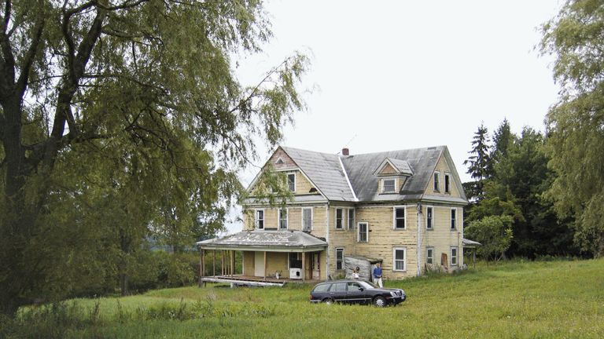
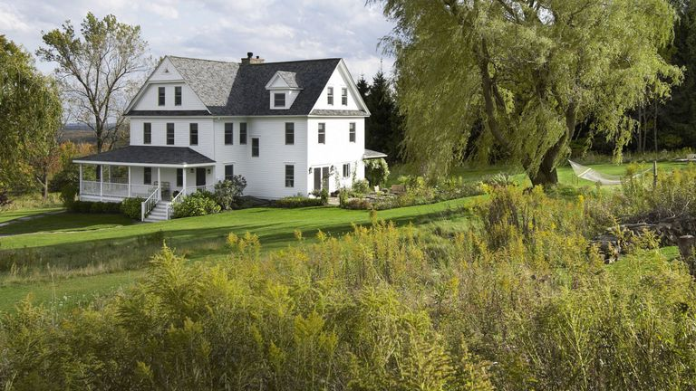
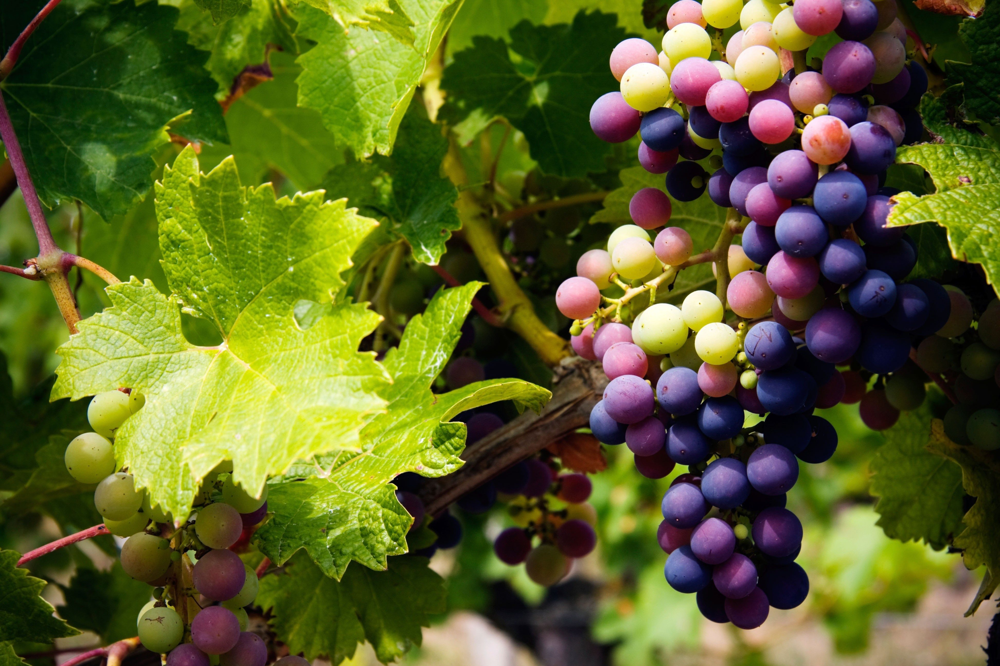
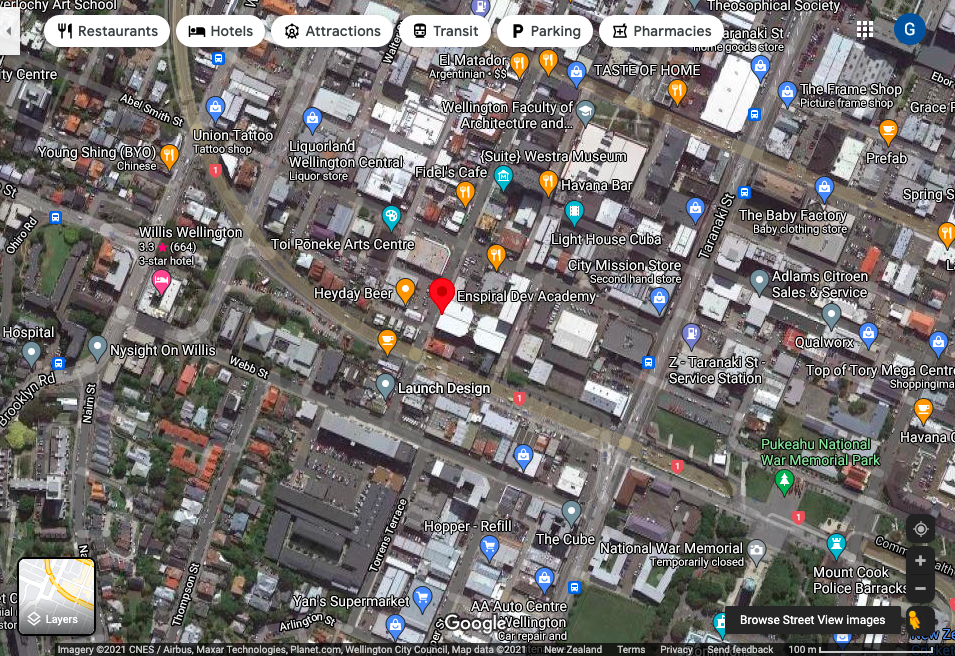
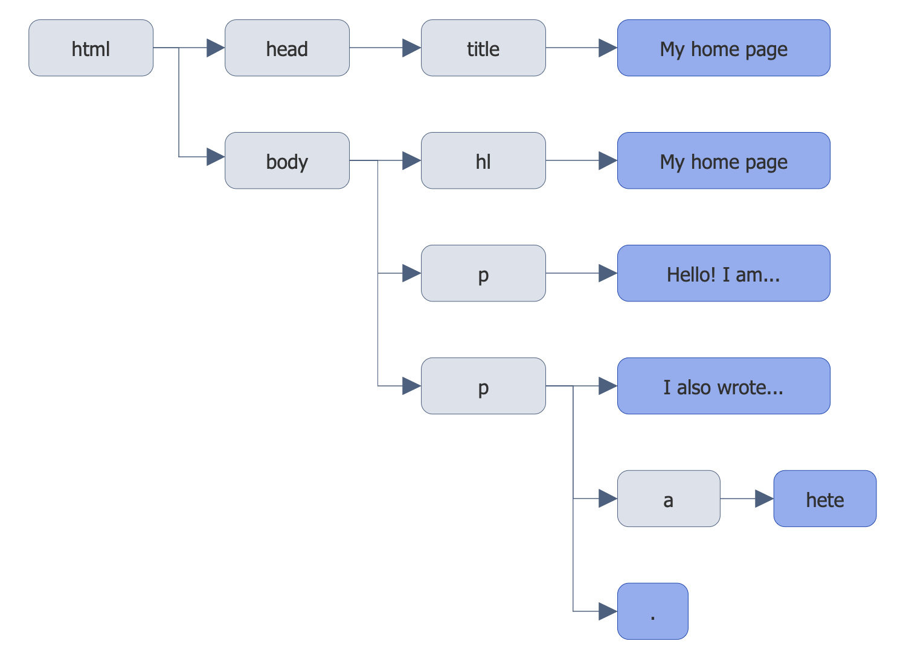
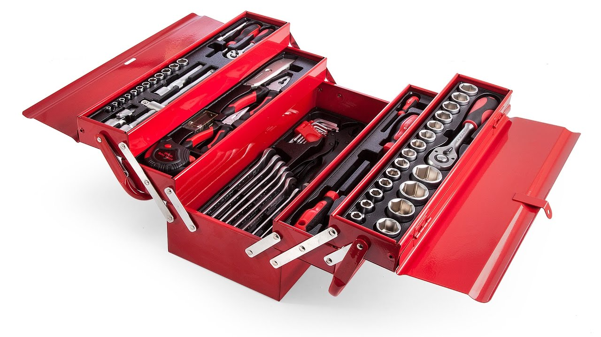
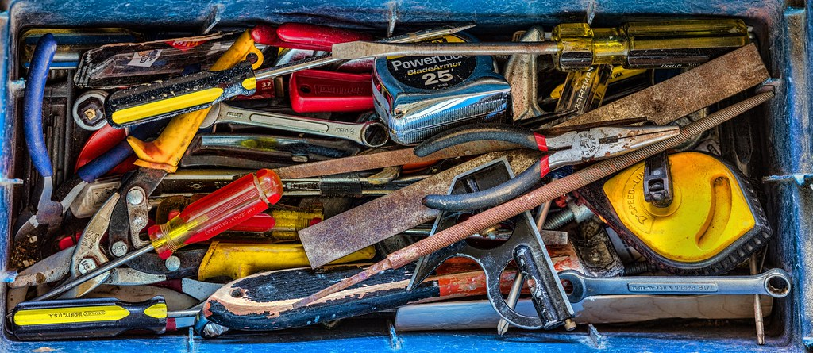
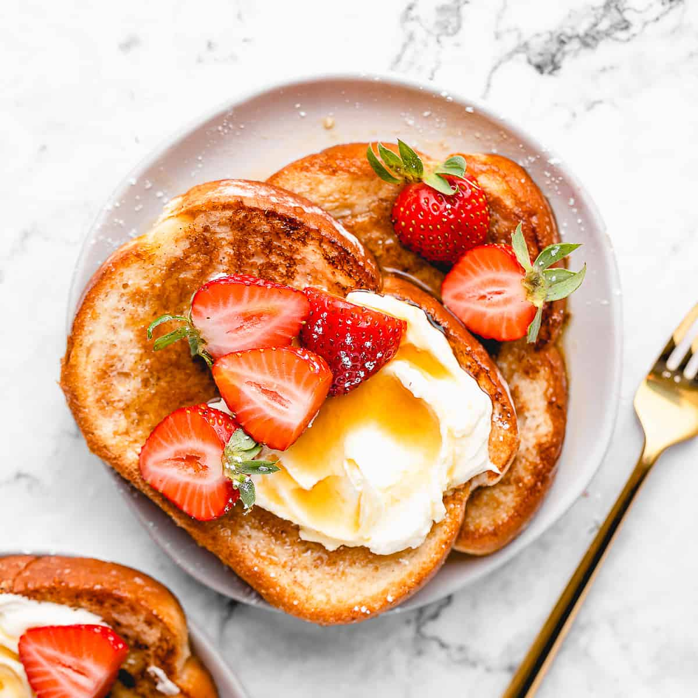
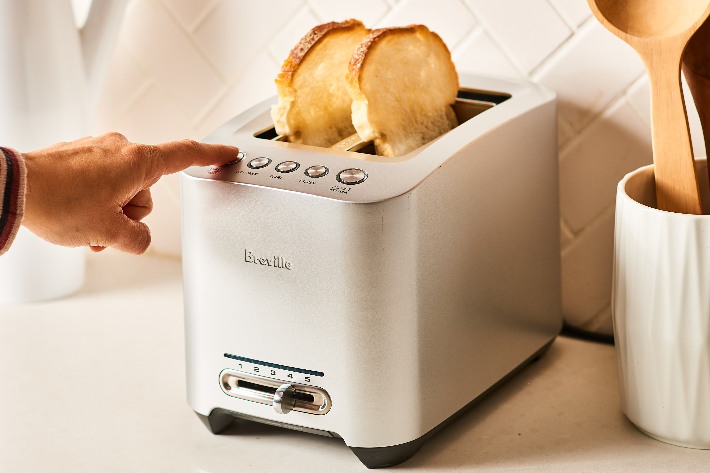
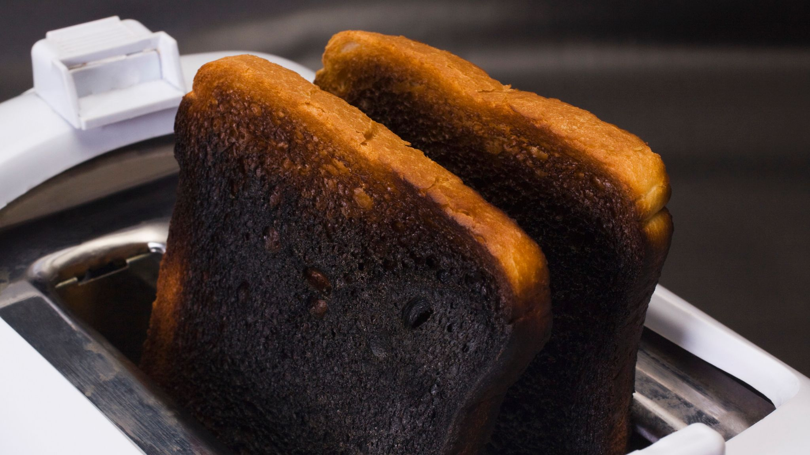

July 9, 2021
HTML & CSS & Javascript?
Let’s imagine that our HTML is a house. It’s been built to have all the rooms we need. However, it is really bland. Sure, we could live in it, but it won’t be comfortable or pretty to look at.
This is where CSS steps in. It adds flair to our house with some new paint and lets us rearrange or replace our furniture! It makes it easier for us to live in and our guests won’t run for the hills on arrival.
So what does Javascript do here? We can imagine them as future plans for the house. It might include moving or changing the look of furniture or wallpapers. It could even be renovations to add, remove, combine and shuffle rooms around!

Loops & Control Flow?
Let’s eat some grapes.
We’ve got a bunch and we start to pick at it. Our loop begins here! We will continue to eat these grapes until there are none left.
So our example loop will look something like this:
// This is pseudo code, not actual code!
while (grape > 0) {
eat grape;
}
But wait! What if we encounter a grotty grape that oozes its insides out at the slightest touch? We don’t want to eat that! Let's edit our control flow to reflect this:
// This is pseudo code, not actual code!
while (grape > 0) {
if (grape-quality == acceptable) {
eat grape;
} else {
scowl-at-grape;
delete-grape-from-existence;
}
}
Cool! Once we eat or throw out all our grapes, we are free to carry on and do something else!
The DOM?
It’s essentially a map! It tells us where places are, how to get there, what the area contains and what it looks like.
Not only that, the map is magic! If you get a marker and draw a hill on it, you will see the hill materialize in front of you. If you colour it pink, voilà! It’s now a pink hill!
Now, what if you burn the map? Engulf it completely? Welcome to the - void -.
-
But really, the DOM stands for Document Object Model. It allows us to inspect the web page and visualize what the heck the HTML and CSS code is doing.
On top of that, the DOM allows us to change the code and see it take effect immediately. Reloading will reset it though! (It’d be absolute chaos if everybody could edit any page haha)
We can use JavaScript functions like loops, to select and iterate through our elements, changing anything we want, however we like.
Arrays and Objects?
We can imagine the arrays like an organized toolbox where the screwdrivers are arranged from biggest to smallest.
In code, it looks something like this:
var toolbox = [
"screwdriverLargest",
"screwdriverLarge",
"screwdriverNormal",
"screwdriverSmall",
"screwdriverSmallest"
];
If we specifically needed the second largest one, we would know to grab the second one from the left with : toolbox[1].
We use [1] for the second item because arrays are zero-indexed (starts counting at 0).
Objects on the other hand… They are like a toolbox that contains pretty much everything you need, but it’s a complete mess.
They look like this:
var toolbox = {
“drillKey”: “drill”,
“pliersKey”: “pliers”,
“screwdriverKey”: “screwdriver”,
“scissorsKey”: “scissors”,
“knifeKey”: “sword”
};
Need a screwdriver? You know it’s in there. You hesitate as you think of all the pointy things that could stab you in there, but you need it. You stick your hand in there to dig and rummage aroun- oh nevermind, it’s right here! How handy!
Here, toolbox[“screwdriverKey”] will give us the “screwdriver” item.
In other words...
Both arrays and objects are a collection of variables.
Items in arrays are ordered (though not necessarily sorted). When you retrieve something from an array, you have to refer specifically to the placement of that item in that order.
Items contained in objects are labelled with a 'key' that contains a value. When we need a value of something inside the object, we just need to give it a 'key' and it will spit it out for us.
Functions?
What’s a decent analogy for this? I’m in the mood for toast as I’m writing this, so let’s use toast and toasters!
Let's say I happen to have two imaginary pieces of bread with me. One is fresh and one is frozen. I could toast one slice, throw away the toaster, buy a new one, and then toast the second piece... That would work but it’d be horribly impractical and expensive! So instead, I’m going to use the same toaster, but set the timer to be slightly longer for my frozen piece.
In code, it might be something like this:
// This is pseudo code, not actual code!
function toastBread (toastingTime) {
insert-slice;
toast-this-slice-for (toastingTime);
pop-slice-up;
return toast;
}
// calling the function to run
toastBread (fresh-toastingTime);
toastBread (frozen-toastingTime);
toastingTime is the parameter in the function. So calling that same function with a fresh-toastingTime and a frozen-toastingTime as the arguments for each of my slices should return two, equally burnt pieces of toast... -_-'
Functions are great for efficiency and writing cleaner code. We’ll often be needing to run the same (or similar) sections of code over and over. Instead of copying and pasting that code and making slight changes each time, we can make a function containing that bit of code only once. We can substitute the values we need to tweak as variables known as parameters, in the function. Once that is done, whenever we need to use our function, we call it and plug in the parameters with new values, known as arguments.
Thanks for reading!